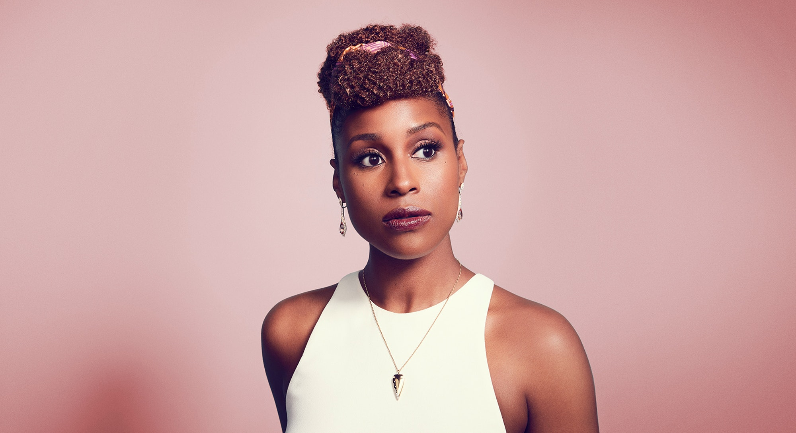

{sobre ocupar espaços}

Jo-Issa Rae Diop, mais conhecida como Issa Rae, é uma atriz, escritora, cineasta e produtora cinematográfica norte-americana que em suas produções dá destaque a vivência de pessoas negras.
Issa criou a websérie Akward Black Girl e a série da HBO Insecure.
Enquanto estiver nessa indústria hollywoodiana, minha vida será abrir portas para outras pessoas negras.
História
Issa é uma mulher negra que cria histórias a partir da perspectiva de pessoas negras. Ela deseja mais pessoas negras trabalhando na produção nos bastidores para causar um impacto duradouro na indústria do audiovisual.
Issa se formou na Universidade de Stanford com bacharelado em estudos africanos e afro-americanos. Em Stanford, Diop conheceu Tracy Oliver, que a ajudou a produzir Awkward Black Girl.
A websérie Awkward Black Girl no YouTube em 2011. O show segue a vida de J (interpretada por Rae) enquanto ela interage com colegas de trabalho e interesses amorosos que a colocam em situações desconfortáveis.
Insecure segue o mesmo caminho e utiliza do humor sarcástico para contar o cotidiano de uma mulher negra adulta e as pessoas ao seu redor. Na série, Issa Rae interpreta Issa, para além do própria nome, suas experiências pessoais também são utilizadas para tratar de questões como racismo e sexualidade.